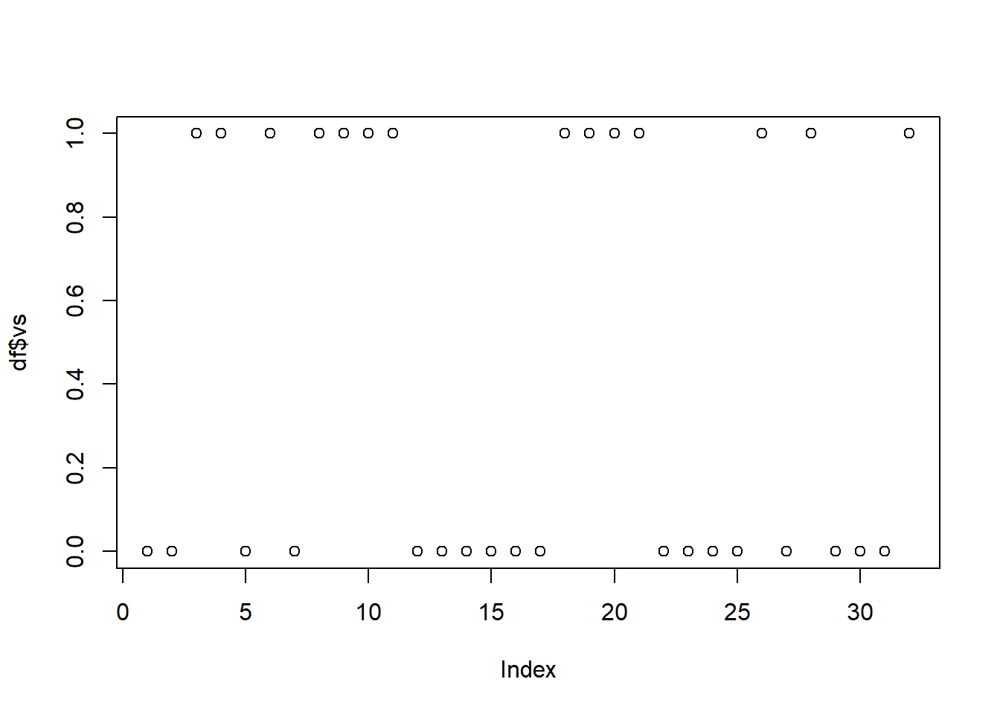

2 Первая лекция
2.1 Темы занятий
- Частотные таблицы. Таблицы сопряженности. Хи-квадрат и точный критерий Фишера. (Что такое частотные данные. Как строить таблицы сопряженности. Математика хи-квадрата. Требования. Точный критерий Фишера.)
- Проверка на нормальность и сравнение средних (Графические и аналитические методы. Вероятностная бумага. Критерии Шапиро–Уилка и Колмогорова–Смирнова. Параметрические и непараметрические критерии. t-тест, U-Манна-Уитни, Вилкоксон)
2.2 Частотные данные
Частотные данные часто используются для описательных статистик. Это позволяет получить представление о структуре анализируемых данных в целом.
Примеры будем разбирать на встроенном датасете R - mtcars: датасет с 32 автомобилями по 11 признакам, два из которых (vs и am) являются номинальными переменными (факторами) c уровнями, закодированными в виде 0 и 1 (подробнее см. ‘?mtcars’). ‘mpg’ - топлевная экономичность (в милях на галон) запишем его в переменнную ‘df’.
df <- mtcars2.2.1 Описательные статистики
К описательным статистикам обычно относят характеристики центральной тенденции:
Медиана - уровень показателя, который делит набор данных на две равные половины.
median(df$mpg)## [1] 19.2Арифметическое среднее - сумма чисел, разделённая на их количество.
mean(df$mpg)## [1] 20.09062Мода - значение во множестве наблюдений, которое встречается наиболее часто.
Для моды стандартной команды в R не предусмотрено, можно использовать такую функцию:
Modes <- function(x) {
ux <- unique(x) # выделение уникальных значений в векторе
tab <- tabulate(match(x, ux)) # подсчет сколько раз встречается значение
ux[tab == max(tab)]
}
Modes(df$cyl)## [1] 8А также показатели вариации (изменчивости) данных:
Дисперсия случайной величины – это один из основных показателей в статистике. Он отражает меру разброса данных вокруг арифметической средней.
КАРТИНКА ПОЯСНЯЮЩАЯ
var(df$mpg)## [1] 36.3241Стандартное отклонение - оценка стандартного отклонения ее выборочного распределения, приближенно показывает, насколько значение статистики может отличаться от своего среднего значения (параметра генеральной совокупности).
sd(df$mpg) ## [1] 6.026948Стандартная ошибка - (или просто стандартная ошибка) приближенно показывает, насколько ее выборочная средняя (случайная наблюдаемая величина) отличается от среднего генеральной совокупности.
Специальной функции для расчета стандартной ошибки среднего в R нет, однако для этого вполне подойдут уже имеющиеся функции. Как известно, стандартная ошибка средней рассчитывается как отношение стандартного отклонения (sd) к квадратному корню из объема выборки:
sd(df$mpg)/sqrt(length(df$mpg)) # функция length() возвращает число элементов в векторе mpg## [1] 1.065424Минимальное, максимальное значение и размах (оба значения).
min(df$mpg)## [1] 10.4max(df$mpg)## [1] 33.9range(df$mpg)## [1] 10.4 33.9Можно посмотреть многие эти характеристики (если они применимы к шкале) с помощью функции ‘summary()’
summary(df) ## mpg cyl disp hp
## Min. :10.40 Min. :4.000 Min. : 71.1 Min. : 52.0
## 1st Qu.:15.43 1st Qu.:4.000 1st Qu.:120.8 1st Qu.: 96.5
## Median :19.20 Median :6.000 Median :196.3 Median :123.0
## Mean :20.09 Mean :6.188 Mean :230.7 Mean :146.7
## 3rd Qu.:22.80 3rd Qu.:8.000 3rd Qu.:326.0 3rd Qu.:180.0
## Max. :33.90 Max. :8.000 Max. :472.0 Max. :335.0
## drat wt qsec vs
## Min. :2.760 Min. :1.513 Min. :14.50 Min. :0.0000
## 1st Qu.:3.080 1st Qu.:2.581 1st Qu.:16.89 1st Qu.:0.0000
## Median :3.695 Median :3.325 Median :17.71 Median :0.0000
## Mean :3.597 Mean :3.217 Mean :17.85 Mean :0.4375
## 3rd Qu.:3.920 3rd Qu.:3.610 3rd Qu.:18.90 3rd Qu.:1.0000
## Max. :4.930 Max. :5.424 Max. :22.90 Max. :1.0000
## am gear carb
## Min. :0.0000 Min. :3.000 Min. :1.000
## 1st Qu.:0.0000 1st Qu.:3.000 1st Qu.:2.000
## Median :0.0000 Median :4.000 Median :2.000
## Mean :0.4062 Mean :3.688 Mean :2.812
## 3rd Qu.:1.0000 3rd Qu.:4.000 3rd Qu.:4.000
## Max. :1.0000 Max. :5.000 Max. :8.000В статистике данные очень часто группируют в соответствии с тем или иным признаком, например, полом, социальным положением, стадией болезни, местом отбора проб и т.п. В R существует специальный класс векторов - факторы (factors), которые предназначены для хранения кодов соответствующих уровней номинальных признаков.Часто уровни факторов кодируют в виде чисел.
Если что факторные переменные закодированы при помощи чисел 0 и 1, то для корреткной работы нужно их преобразовать в факторы.
например переменная ‘df$vs’ указана как numeric.
class(df$vs) ## [1] "numeric"Это может приводить к некоректной работе. Наример плот неправильно строит граф потому что неверно воспринимает тип переменной.
plot(df$vs) ```
Изменим тип переменной в факторы.
df$vs <- as.factor(df$vs) # теперь summary(df$vs) отображается корректно
plot(df$vs)
Или их можно переименовать сделав факторами в соответсвии с типом двигателя (V или S образный тип).
df$vs <- factor(df$vs, labels = c("V", "S")) и по коробке передач (автоматическая или механическая).
df$am <- factor(df$am, labels = c("auto", "manual"))
summary(df$am)## auto manual
## 19 13plot(df$am)Также можно вставлять логические условия для обращения к некоторым элементам
mean(df$mpg[df$cyl == 6 & df$vs == "V"]) # те элементы у количество цилиндров = 6 и V-обтразный двигатель)## [1] 20.56667‘NA’ в переменной будет мешать посчитать некоторые статистики (например среднее значение)
df$mpg[3] <- NA
head(df$mpg)## [1] 21.0 21.0 NA 21.4 18.7 18.1mean(df$mpg)## [1] NAМожно пропускать отсутсвующие значения опцией na.rm (от not available и remove - удалить)
mean(df$mpg, na.rm = TRUE) ## [1] 20.00323вернем значение на место
df$mpg[3] <- 22.8Количество всех значений можно посчитать через
length(df$mpg)## [1] 32Количество неотсутствующих значений можно посчитать вот так:
sum(!is.na(df$mpg)) # ! (логический оператор "не"), sum (cуммация), соответственно убрав ! можно посчитать количество пропущеных значений.## [1] 32sum(is.na(df$mpg)) # в этой переменной таких нет## [1] 0Выяснить порядковые номера элементов, обладающих минимальным и максимальным значениями.
which.min(df$mpg) ## [1] 15which.max(df$mpg) ## [1] 20Не бойтесь использовать функции при индексации и в других функциях:
rownames(df)[which.min(df$mpg)]## [1] "Cadillac Fleetwood"Описательные статистики можно также выполнять функцией aggregate()
aggregate(x = df$mpg, by = list(df$vs), FUN = mean) # лист группирующих переменных## Group.1 x
## 1 V 16.61667
## 2 S 24.55714aggregate(hp ~ vs, df, mean) # упрощенная запись ## vs hp
## 1 V 189.72222
## 2 S 91.35714aggregate(hp ~ vs + am, df, mean) # Можно разбивать по нескольким группам.## vs am hp
## 1 V auto 194.16667
## 2 S auto 102.14286
## 3 V manual 180.83333
## 4 S manual 80.57143А также функцией ‘tapply()’. Эта функция относится к “apply-семейству” R-функций. Эти функции позволяют выполнять математические вычисления над определенными элементами таблиц данных, матриц, или массивов (например, быстро вычислять среднее значение для каждого столбца или строки таблицы, и т.п.).
tapply(X = df$mpg, INDEX = df$am, FUN = Modes) # считает моду топливной экономичности по факторам коробки передач ## $auto
## [1] 19.2 15.2 10.4
##
## $manual
## [1] 21.0 30.4Подсчет среднего топливной экономичности по факторам коробки передач и типу двигателя.
tapply(X = df$mpg, INDEX = list(df$am, df$vs), FUN = mean)## V S
## auto 15.05 20.74286
## manual 19.75 28.37143В параметр FUN можно вставлять пользовательские функции, например написаную вручную функцию для стандратных ошибок.
SE <- function(x) {sd(x)/sqrt(length(x))}Вставляем в FUN и все работает.
tapply(X = df$disp, INDEX = df$am, FUN = SE)## auto manual
## 25.27511 24.186032.2.2 Показатели вариации
Показатели вариации дают очень важную характеристику процессам и явлениям. Они отражают устойчивость процессов и однородность явлений. Чем меньше показатель вариации, тем более процесс устойчивый, а значит, и более предсказуемый.
Квантили - общий термин для порогового значения не выше которого (то есть равно или ниже) которого лежит указанная часть данных. Медиана делит распределение попалам. Квартили делят распределение на четверти, квинтили - на 5 частей, децили - на 10 частей и процентили - на 100.
Например, первый квартиль (Q1) делит распределение так, что 25 процентов наблюдений лежат не выше него; следовательно, 1-й квартиль также является 25-м процентилем. Второй квартиль (Q2) представляет 50-й процентиль, а третий квартиль (Q3) представляет 75-й процентиль, потому что 75 процентов наблюдений лежат не выше него.
quantile(df$mpg)## 0% 25% 50% 75% 100%
## 10.400 15.425 19.200 22.800 33.900При настройках, заданных по умолчанию, выполнение указанной команды приведет к расчету минимального (10.4) и максимального (33.9) значений, а также трех квартилей, т.е. значений, которые делят совокупность на четыре равные части - 15.4, 19.2 и 22.8. Межквартильный размах - это разница между 1-м и 3-м квартилями, т.е. между 25-м и 75-м процентилями. А разница между первым и третьим квартилями носит название интерквартильный размах (ИКР; англ. interquartile range).
ИКР является робастным (выборосоустойчивый) аналогом дисперсии и может быть рассчитан в R при помощи функции IQR():
IQR(df$mpg)## [1] 7.375Функция ‘quantile()’ позволяет рассчитать и другие квантили. Например, децили (т.е. значения, делящие совокупность на десять частей) можно получить следующим образом:
quantile(df$mpg, p = seq(0, 1, 0.1)) # задан вектор чисел от 0 до 1 с шагом в 0.1 = 10 квартилей## 0% 10% 20% 30% 40% 50% 60% 70% 80% 90% 100%
## 10.40 14.34 15.20 15.98 17.92 19.20 21.00 21.47 24.08 30.09 33.90Межквартильный размах - это разница между 1-м и 3-м квартилями, т.е. между 25-м и 75-м процентилями. Разница между первым и третьим квартилями носит название интерквартильный размах.
Наглядное отображение размаха вариации и межквартильного расстояния производят с помощью диаграммы «ящик с усами».
boxplot(df$mpg)Для подсчета кооффициента вариации и ассиметрии существует пакет moments (функции ‘kurtosis()’ и ‘skewness()’)
install.packages("moments")library(moments)## Warning: package 'moments' was built under R version 3.5.2Коэффициент вариации или эксцесс (Kurtosis) - (среднеквадратическое отклонение деленное на среднее и умноженное на 100%). Этот показатель, который отражает остроту вершины и толщину хвостов одномерного распределения. Коэффициент вариации близок к 3 если наблюдения подчиняются нормальному распределению. Если коэффициент вариации значительно отличается от 3, то гипотезу о том, что данные взяты из нормально распределенной генеральной совокупности, следует отвергнуть. (НАСКОЛЬКО БОЛЬШЕ?)
(Синяя кривая – нормальное распределение (куртозис нормального распределения вне зависимости от математического ожидания и стандартного отклонения равен 3). Красная кривая – имеет положительный эксцесс/куртозис больше 3.)
set.seed(42) # устанавливает seed (семечко) чтобы последующий псевдослучайный процесс можно было вопроизвести
kurtosis(rnorm(1000))## [1] 3.134824Коэффициент асимметрии - величина, характеризующая асимметрию распределения данной случайной величины. Положителен если правый хвост распределения длиннее левого. (ДОБАВИТЬ ФОТО С НАГЛЯДНОСТЬЮ)
skewness(df$mpg, na.rm = TRUE)# считая пропущенные значения## [1] 0.64043992.3 Частотный анализ для разных шкал измерений
Если вчера было 2 градусов по Цельсию а сегодня 4 градуса, значит ли это что сегодня в два раза теплее? (Ответ станет понятен в процессе.)
2.3.1 Неметрические шкалы: наименований и ранговая.
Доступны непараметрические методы статистики. В шкале наименований (номенальной) числа используются лишь как метки, для различения обьектов. Примеры: тип двигателя (V образный и S образный), пол, расса. Допустимые операции: проверка совпадания несовпадения (тождественность)(a==b,a!=b). Возможные описательные статистики: частота, мода.
df$vs[1] == df$vs[2] # обе машины имеют V образный двиатель ## [1] TRUEdf$vs[1] == df$vs[3] # а эти имеют разные типы двигателей## [1] FALSEВ порядковой шкале (или ранговой) объекты ранжированы, расположены в порядке увеличения или уменьшения значения параметра. Примеры: бальные оценки успеваемости (неудовлетворительно, удовлетворительно, хорошо, отлично). Допустимые операции: проверка тождественности (a==b,a!=b), сравнения (a>b, a<b). Упорядочим машины по параметру “Приятность названия машины Григорию” (где 1 самая приятная)
df$like <- c(16,15,6,5,13,12,27,27,27,27,27,27,14,17,3,10,11,18,9,25,24,7,23,22,26,2,1,9,8,19,20,21)Одинаково ли Григорию нравятся название машин “Merc 240D” и Merc 230?
df["Merc 230", "like"] == df["Merc 240D", "like"] # да, одинаково## [1] TRUEА какое название приятнее “Porsche 914-2” или “Chrysler Imperial”?
df["Porsche 914-2", "like"] < df["Chrysler Imperial", "like"] # "Porsche 914-2" имеет более высокий ранг.## [1] TRUEВозможные описательные статистики: мода, медиана. Допустимые статистики: ранговые коэффициенты корреляции (r-Спирмана, r-Кендалла)
2.3.2 Метрические шкалы: интервальная и абсолютная.
Доступные параметрические методы статистики. В шкале интервалов существенной характеристикой является разность меджу значеними оцениваемых параметров выраженная в единицах этой шкалы. Начало отсчета может быть установлено произвольно.
Примеры: шкала Цельсия. Интервал между замерзанием и кипением воды разделен на 100 равных частей названых градусами.
Допустимые операции: проверка тождественности (a==b,a!=b), сравнения (a>b, a<b), сложения/вычетания (a+b, a-b).
Ответ на вопрос в начале: Так как действия умножения и деления недоступны для интервальной шкалы, то неправомерно говорить во сколько раз одна температура больше другой.
Возможные описательные статистики: мода, медиана, среднее арефметическое, стандартное отклонение.
Допустимые статистики: критерий согласия Пирсона, R — множественный коэффициент корреляции, все известные операции с натуральными числами.
Шкала отношений (абсолютная шкала) - это шкала интервалов у которой определено нулевой элемент - начало отсчета, а также размер едениц измерения.
Примеры: длинна, стоимость, возраст.
Допустимые операции: проверка тождественности (a==b,a!=b), сравнения (a>b, a<b), сложения/вычетания (a+b, a-b), умножения и деления (a*b, a/b).
Возможные описательные статистики: мода, медиана, среднее арефметическое, дисперсия, стандартное отклонение, коэффициент вариации, геометрическое среднее (перемножаем числа и делим на их колличество).
Допустимые статистики: критерий согласия Пирсона, R — множественный коэффициент корреляции, все известные операции с натуральными числами.
Как правило, для переменных, относящихся к метрической (интервальной) шкале и подчиняющихся нормальному распределению, в качестве основной характеристики используют среднее значение, а в качестве меры разброса – стандартное отклонение или стандартную ошибку. Для порядковых или интервальных переменных, не подчиняющихся нормальному распределению, соответственно медиану или первый и третий квартили. Для переменных, относящихся к номинальной шкале, нельзя дать других значимых характеристиккроме моды.